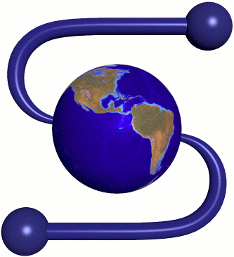

Pushing Boundaries: Zend Framework 3 and the Future
by Enrico Zimuel, Senior Sofware Engineer
Zend Technologies Ltd
PHP Day, Verona (Italy), 15th May 2015
About me
Enrico Zimuel (@ezimuel), professional developer since 1996. Senior Software Engineer in the R&D department of Zend Technologies, since 2008. Research in computer science at the Informatics Institute of Amsterdam University. Open source contributor and co-author of Apigility and Zend Framework. Co-author of the Italian books PHP Best Practices and Javascript Best Practices. Co-founder of PUG Torino (Italy).
ZF3 in a nutshell
- Emphasis on components
- Focus on HTTP, via PSR-7 and middleware
- Optimize for PHP 7, but support PHP 5.5+
- Stable release October 2015!
Components
ZF1: the past
- Components are developed within the framework repository, and
- are installable only with the entire framework.
ZF2: today
- Components are developed within the framework repository, and
- can be installed individually (Composer, git submodules).
The future
ZF 2.5+
- Components will be developed in their own repositories.
- Components will be installable individually.
- The ZF repository will depend on components!
ZF's composer.json becomes...
{
"require": {
"zendframework/zend-authentication": "^2.5",
"zendframework/zend-cache": "^2.5",
"zendframework/zend-captcha": "^2.5",
"etc": "*"
}
}
Why?
Ease maintenance
- Allow more teams with commit rights
- Allow deterministic fate of repositories
Selective evolution
- Bump major versions as needed
- Framework repo can selectively upgrade components
Use-case specific skeletons
- Delivering only web services?
- Need performance?
- Need everything?
There will be a skeleton for
that!
HTTP, PSR-7, and Middleware
HTTP is the foundation of the web
- A client sends a request
- A server returns a response
HTTP messages
Request
GET /path HTTP/1.1
Host: example.com
Accept: application/json
Response
HTTP/1.1 200 OK
Content-Type: application/json
{"foo":"bar"}
Frameworks model messages
But every framework does it differently.
$method = $request->getMethod();
$method = $request->getRequestMethod();
$method = $request->method;
PSR-7
Shared HTTP Message Interfaces
Request
$method = $request->getMethod();
$accept = $request->getHeader('Accept');
$path = $request->getUri()->getPath();
$controller = $request->getAttribute('controller');
Response
$response->getBody()->write('Hello world!');
$response = $response
->withStatus(200, 'OK')
->withHeader('Content-Type', 'text/plain');
PSR-7 and the ZF MVC
Still under discussion, but…
- we may consume PSR-7 directly
- or create a bridge implementation
Middleware
Between the request and response
function (Request $request, Response $response)
{
// do some work
return $response; // same, or a new instance.
}
Between the request and response
function (Request $request, Response $response)
{
// do some work
return $response; // same, or a new instance.
}
Types of middleware
Stacks or pipelines
$pipeline->pipe($middleware1); // always evaluate
$pipeline->pipe('/path', $middleware2); // only if path matches
$pipeline->pipe('/different/path', $middleware3);
$response = $pipeline->run();
Onion style
class Outer
{
public $inner;
public function __invoke($request, $response)
{
// do some work
$response = ($this->inner)($request, $response);
// do some work
return $response;
}
}
$response = $outer($request, $response);
Lambda style
function (Request $request)
{
// do some work
return $response;
}
$response = $middleware($request);
Consuming middleware
ZF will allow dispatching the following middleware:
/**
* @return Response
*/
public function (Request $request, Response $response);
… and ZF controllers will be middleware.
Middleware wrapper for ZF
$middleware = new MvcMiddlewareWrapper(
require 'config/application/config.php'
);
class MvcMiddlewareWrapper
{
public function __invoke($request, $response)
{
$app = Application::init($this->config);
return $app->dispatch($request, $response);
}
}
Middleware as an alternative runtime
Why?!?!?!?!
- Performance
- Developer experience
- Reusability across frameworks
Example
$app = new Middleware();
$app->pipe('/', $homepage); // Static!
$app->pipe('/customer', $zf2Middleware); // ZF2!
$app->pipe('/products', $zf1Middleware); // ZF1!
$app->pipe('/api', $apigility); // Apigility!
$app->pipe('/user', $userMiddleware); // 3rd party!
$server->listen($app);
PSR-7 and Middleware provide…
- Paths for performance optimization
- Simpler web-facing interfaces
- Greater interoperability and re-use potential
PHP 7 and PHP 5.5
Upgrade to PHP 5.5
- We get to use traits!
- We get to use short array syntax!
- We get to use the callable type hint!
- We get to use finally!
- We can use the ::class magic constant!
- We get to use generators!
- We get faster, more secure PHP!
PHP 7
Impressive performance improvement!
New data structure management in the PHP engine
New features like return/scalar type declarations
PHP 7: benchmark
$a = array();
for ($i = 0; $i < 1000000; $i++) {
$a[$i] = array("hello");
}
echo memory_get_usage(true);
| PHP 5.6 | PHP 7 | |
| Memory Usage | 428 MB | 33 MB |
| Execution time | 0.49 sec | 0.06 sec |
bench.php
Wordpress
Frameworks
ZF3: optimized for PHP 7
- Running tests in strict and/or coercive mode.
- Allowing us to fix bugs for PHP 5, and also forward-proof code for PHP 7.
- Potentially automate release builds that add scalar typehints from docblock annotations.
- Profiling in PHP 7 to see where we can optimize architecture for performance.
Updating PHP…
- Provides better security
- Improves performance
- Allows us to improve the framework
Summarize
Components!
HTTP, PSR-7, and Middleware!
PHP 7 and PHP 5.5!
Some references
- Matthew Weier O'Phinney, PSR-7 By Example
- Matthew Weier O'Phinney, On HTTP, Middleware, and PSR-7
- PHP Framework Interop Group, PSR HTTP Message
- 5 THINGS YOU MUST KNOW ABOUT PHP7, Infographic by Zend
- Get performance insight into the upcoming release of PHP 7, Infographic by Zend
- Dmitry Stogov, PHPNG a New Core for PHP7, ZendCond 2014
Thank you!
Rate this talk at: joind.in/14532
Enrico Zimuel
http//framework.zend.com
https://apigility.org
@ezimuel
http://www.zimuel.it

This work is licensed under a
Creative Commons Attribution-ShareAlike 3.0 Unported License.
I used reveal.js to make this presentation.